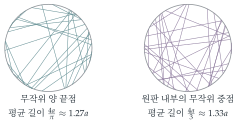

STEP III 2022, 문제 12
다음으로 넘어가기 전에 문제를 먼저 읽어 보자. 이 문제는 OCR에서 내려받을 수 있는 2022년 STEP 문제지 모음(zip 파일)의 STEP III 문제지에 있다: www.ocr.org.uk/Images/696587-2022-past-papers.zip
도입
“원의 현(chord)을 무작위로 하나 고른다. 그 길이의 기댓값(expected value)은 얼마인가?” 이 질문에는 답이 있을 것처럼 들린다. 그러나 “무작위로”가 무슨 뜻인지 정하기 전까지는 답이 없다. 원 위의 두 점을 무작위로 골라 이으면 길이의 기댓값은 \(\frac{4a}{\pi} \approx 1.27a\)이다. 원 내부의 한 점과 그 점을 지나는 방향을 무작위로 고르면 답은 \(\frac{16a}{3\pi} \approx 1.70a\)이다. 두 방법 모두 “무작위 현”을 고르는 지극히 타당한 방법이다.
이것이 베르트랑의 역설(Bertrand’s paradox)로, 조제프 베르트랑(Joseph Bertrand)이 1889년에 일종의 경고로서 발표한 것이다. 확률은 무작위 시행이 구체적으로 정해진 뒤에야 비로소 잘 정의된다. 이 역설은 수학자들이 20세기에 확률론의 엄밀한 기초를 세우는 데 한몫했는데, 이 기초에서는 모든 확률이 정확하게 정의된 결과들의 공간 위에서 다루어진다.
시작하기 전에
각 \(AOB\)가 \(\theta\)일 때 현 \(AB\)의 길이는 얼마인가? (\(O\)에서 수선을 내려 보자.)
\(O\)에서 내린 수선은 현과 각을 모두 이등분하므로 \(AB = 2a\sin\frac\theta2\)이다.
차근차근 풀기
단계 1 원 위의 두 점
\[\mathrm{E}(AB) = \frac{1}{2\pi}\int_0^{2\pi}2a\sin\frac\theta2\,\mathrm{d}\theta = \frac{a}{\pi}\Bigl[-2\cos\frac\theta2\Bigr]_0^{2\pi} = \frac{a}{\pi}\cdot 4 = \frac{4a}{\pi}. \qed\]
단계 2 내부의 무작위 점
\(0 \leq r \leq a\)일 때 \(\mathrm{P}(R \leq r)\)는 얼마인가? 이를 미분하여 확률밀도를 구하라.
\(\mathrm{P}(R \leq r)\)는 반지름이 \(r\)인 원판의 넓이를 전체 원판의 넓이로 나눈 값, 즉 \(\frac{r^2}{a^2}\)이다. 따라서 \(R\)는 \([0, a]\)에서 확률밀도(probability density) \(\frac{2r}{a^2}\)를 가진다. (중심에서 먼 곳일수록 넓이가 더 크므로, 점은 중심에서 멀리 있을 가능성이 더 크다.)
\(C\)를 지나는 현이 \(OC\)와 각 \(t\)를 이룬다. 이 현은 \(O\)에서 얼마나 떨어져 있는가?
\(O\)에서 이 직선까지의 거리는 \(R\sin t\)이므로 현의 길이는 \(2\sqrt{a^2 - R^2\sin^2t}\)이다.
단계 3 \(C\)에 대한 평균
\(s = \sin t\)라 하면 \[\begin{aligned} L(t) &= \int_0^a 2\sqrt{a^2 - r^2s^2}\cdot\frac{2r}{a^2}\,\mathrm{d}r = \frac{4}{a^2}\Bigl[-\frac{(a^2 - r^2s^2)^{3/2}}{3s^2}\Bigr]_0^a \\ &= \frac{4}{a^2}\cdot\frac{a^3 - a^3(1 - s^2)^{3/2}}{3s^2} = \frac{4a(1 - \cos^3t)}{3\sin^2t}. \qed \end{aligned}\]
\(1 - \cos^3t\)와 \(\sin^2t = 1 - \cos^2t\)를 인수분해하라. 무엇이 약분되는가?
\(c = \cos t\)라 하면 \(\frac{1 - c^3}{1 - c^2} = \frac{(1 - c)(1 + c + c^2)}{(1 - c)(1 + c)} = \frac{1 + c + c^2}{1 + c} = c + \frac{1}{1 + c}\)이고, \(1 + \cos t = 2\cos^2\frac t2\)이다. 따라서 \[L(t) = \frac{4a}{3}\Bigl(\cos t + \tfrac12\sec^2\tfrac t2\Bigr). \qed\]
단계 4 방향도 무작위로
\[\begin{aligned} \mathrm{E}\bigl(L(T)\bigr) &= \frac2\pi\int_0^{\pi/2}\frac{4a}{3}\Bigl(\cos t + \tfrac12\sec^2\tfrac t2\Bigr)\mathrm{d}t \\ &= \frac{8a}{3\pi}\Bigl[\sin t + \tan\tfrac t2\Bigr]_0^{\pi/2} = \frac{8a}{3\pi}(1 + 1) = \frac{16a}{3\pi}. \qed \end{aligned}\]

돌아보기
시행을 구체적으로 정하라. 각 소문항에서 “무작위 현”은 정확한 절차가 되었고, 절차마다 다른 답이 나왔다.
넓이에서 확률밀도로. \(\mathrm{P}(R \leq r)\)는 기하에서 곧바로 나왔고, 이를 미분하여 확률밀도를 얻었다.
단계별로 평균하라. 먼저 (\(t\)를 고정하고) \(C\)의 위치에 대해 평균하고, 그다음 \(t\)에 대해 평균했다.
숨은 수학
베르트랑의 세 가지 답
베르트랑이 원래 던진 질문은 다음과 같았다. 무작위 현이 원에 내접하는 정삼각형(inscribed equilateral triangle)의 한 변 \(\sqrt3a\)보다 길 확률은 얼마인가? 그는 세 가지 방법과 세 가지 답을 제시했다.
무작위 양 끝점: 한 끝점을 고정하면, 다른 끝점이 원의 가운데 3분의 1 부분에 있을 때 현이 길다. 확률은 \(\frac13\)이다.
무작위 반지름과 그 위의 무작위 점을 중점으로: 현이 \(O\)로부터 \(\frac a2\)보다 가까이 있으면 현이 길다. 확률은 \(\frac12\)이다.
원판 전체에서 고른 무작위 중점: 중점이 \(O\)로부터 \(\frac a2\) 이내에 있으면 현이 길다. 확률은 \(\frac14\)이다.
각 방법은 현들의 집합 위에 주어진 서로 다른 확률분포이며, 여기에 모순은 없다. 세 방법은 서로 다른 질문에 답하고 있을 뿐이다. 교훈은 “균등하게 무작위로”라는 말이 어떤 매개화(parametrisation)를 택했는지에 상대적으로만 의미가 있으며, 연속적인 집합에서는 대개 유일하게 자연스러운 매개화가 존재하지 않는다는 것이다.
정답이 있을까?
1973년 물리학자 Edwin Jaynes는 원을 조금 옮기거나 크기를 조금 바꾸어도 답이 변하지 않아야 한다는 근거로 두 번째 방법이 “올바른” 방법이라고 주장했다. 무작위 현이란 바닥에 그린 원 위로 빨대를 던지는 것과 같아야 한다는 것이다. 중심으로부터의 거리가 균등한 분포만이 이러한 불변성(invariance)을 가지며, 빨대를 던지는 실험도 \(\frac12\)를 확인해 준다. 올바른 분포란 상황의 대칭성을 존중하는 분포라는 같은 생각이 무작위 직선의 수학인 적분기하학(integral geometry)의 바탕에 깔려 있으며, 이것은 12.20 절의 뷔퐁(Buffon)의 바늘 문제도 설명해 준다.
베르트랑은 Calcul des probabilités(1889)에서 현의 역설을 발표했는데, 부분적으로는 그가 보기에 부주의한 “기하학적 확률”의 사용을 비꼬기 위해서였다. 푸앵카레(Henri Poincaré)도 이 역설을 논의했다. 1900년 힐베르트(David Hilbert)는 새 세기를 위한 유명한 문제 목록에 확률론의 공리화(axiomatisation)를 포함시켰고, 콜모고로프(Andrey Kolmogorov)가 1933년에 이를 해결했다. 확률은 결과들의 공간 위의 측도이며, “무작위” 대상에 관한 모든 질문은 먼저 어떤 공간과 어떤 측도를 쓰는지 밝혀야 한다. 베르트랑의 역설은 왜 이것이 필요한지를 보여 주는 대표적인 예이다.
사고 기술
확률을 계산하기 전에 무작위 대상이 정확히 어떻게 생성되는지 기술하라. 기술 방식이 다르면 답도 달라질 수 있다.
대학에서는 모든 확률 계산이 표본공간(sample space)과 확률측도(probability measure)에서 출발한다. 통계학과 물리학에서는 흔히 대칭성을 이용해 올바른 무작위성 모형을 고르는 일이 작업의 큰 부분을 차지한다.
더 도전하기
베르트랑의 확률. 위의 세 확률 \(\frac13\), \(\frac12\), \(\frac14\)를 확인하라.
또 하나의 평균. 현의 중점을 원판에서 균등하게 고르면(오른쪽 그림) 길이의 기댓값이 \(\frac{4a}{3}\)임을 보여라. (힌트: 이것은 \(L(\frac\pi2)\)이다. 왜 그런가?)
무작위 거리. \(O\)에서 현까지의 거리가 \([0, a]\)에서 균등분포를 따르면 길이의 기댓값이 \(\frac{\pi a}{2}\)임을 보여라.
세 방법, 세 분포. 세 방법 각각에 대해 \([0, 2a]\)에서 현의 길이 \(\ell\)의 확률밀도를 구하라.
더 읽을거리
Edwin Jaynes, “The well-posed problem”, Foundations of Physics 3 (1973). 불변성 논증을 담은 글로, 읽기 쉽고 도발적이다.
Gábor Székely, Paradoxes in Probability Theory and Mathematical Statistics (Reidel). 베르트랑의 역설을 비롯한 많은 역설을 다룬다.
Daniel Klain & Gian-Carlo Rota, Introduction to Geometric Probability (Cambridge University Press). 적분기하학을 다룬 책으로, 나중에 읽어 볼 만하다.